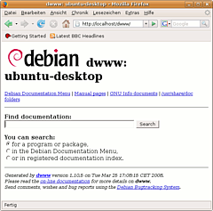

dpkg-www
Dieser Artikel wurde für die folgenden Ubuntu-Versionen getestet:
Dieser Artikel ist größtenteils für alle Ubuntu-Versionen gültig.
Zum Verständnis dieses Artikels sind folgende Seiten hilfreich:

Eine komfortable Möglichkeit, lokal oder per Fernzugriff, durch die installierten Debian-Pakete buchstäblich zu browsen und die dazugehörige Dokumentation, Manpage oder Info-Seite zu lesen, bietet dpkg-www. dpkg-www benötigt einen Webserver der, sofern er nicht schon auf dem System vorhanden ist, automatisch installiert und eingerichtet wird.
Installation¶
Folgendes Paket muss installiert [1] werden:
dpkg-www (universe [2])
 mit apturl
mit apturl
Paketliste zum Kopieren:
sudo apt-get install dpkg-www
sudo aptitude install dpkg-www
Ist bisher kein Webserver auf dem System installiert worden, so wird automatisch der Apache-Webserver installiert. Bei der Installation werden Verzeichnis und Besitzer der Webdaten abgefragt. Die Voreinstellungen können hierbei belassen werden, wenn man keine veränderte Apache-Konfiguration erstellt hat.
Verwendung¶
|  |
| Die Suchmaske |
Browser¶
Um Manpages, Info-Seiten, lokale Dokumentationen und die Paketliste zu durchsuchen, gibt es eine Suchmaske und eine Liste aller Pakete. Natürlich kann auch die dwww-eigene Dokumentation aufgerufen werden.
http://localhost/dwww/ - Suchmaske Dokumentationen (siehe Bildschirmfoto)
http://localhost/cgi-bin/dpkg?query= - Liste aller Pakete
http://localhost/cgi-bin/dwww?search=dwww - dwww-Dokumentation
Die Suchmaske funktioniert nicht?¶
Falls statt der Suchmaske nur ein "DirectoryIndex" erscheint, kann dies wie folgt (mit root-Rechten) behoben werden:
An zwei Stellen der Datei /etc/apache2/sites-enabled/000-default die Direktive
ServerName localhosteinfügen - hier in der ersten und vierten Zeile:
ServerName localhost
NameVirtualHost *
<VirtualHost *>
ServerName localhost
...
Die Syntax der Direktiven prüfen:
apache2ctl configtest
Wenn die "Syntax OK" bescheinigt wurde, den Webserver neu starten:
apache2ctl graceful
Damit sollte die Suchmaske unter http://localhost/dwww/ wie oben dargestellt aussehen.
Terminal¶
Mit dpkg-www können auch Abfragen aus einem Terminal [3] gestartet werden:
dpkg-www bash
öffnet beispielsweise die Paketinformationen zum Paket bash im Browser des Alternativen-Systems, wenn in der Konfiguration nichts anderes angegeben ist.
Um die Ausgabe direkt im Terminal zu erhalten, verwendet man den Parameter -s:
dpkg-www -s bash
Hintergrundwissen¶
Hierbei werden die Informationen der folgenden Befehle hintereinander ausgegeben:
dpkg-query -S bash dpkg-query -l bash dpkg-query -L bash
Konfiguration¶
Für die Anpassung der Einstellungen der Apache-Schnittstelle kann systemweit die Konfigurationsdatei /etc/dpkg-www.conf mit einem Texteditor mit administrativen Rechten [4] bearbeitet werden. Einstellungen für einen einzelnen Benutzer können in der Datei ~/.dpkg-www vorgenommen werden.
Einstellungen wie der bevorzugte Browser werden systemweit in der Datei /etc/dwww/dwww.conf festgelegt:
DWWW_BROWSER=links2 # Browser für die Konsole DWWW_X11_BROWSER=firefox # Browser für den X-Server
Weitere Konfigurationsmöglichkeiten bietet die Manpage zu dwww.conf.
Achtung!
Die Möglichkeit, dpkg-www so einzustellen, dass darüber Pakete verwaltet werden können, wird im Artikel bewusst nicht angesprochen. Die Entwickler selbst raten von der Benutzung ab, da es als Sicherheitsrisiko gilt.
- Erstellt mit Inyoka
-
 2004 – 2017 ubuntuusers.de • Einige Rechte vorbehalten
2004 – 2017 ubuntuusers.de • Einige Rechte vorbehalten
Lizenz • Kontakt • Datenschutz • Impressum • Serverstatus -
Serverhousing gespendet von